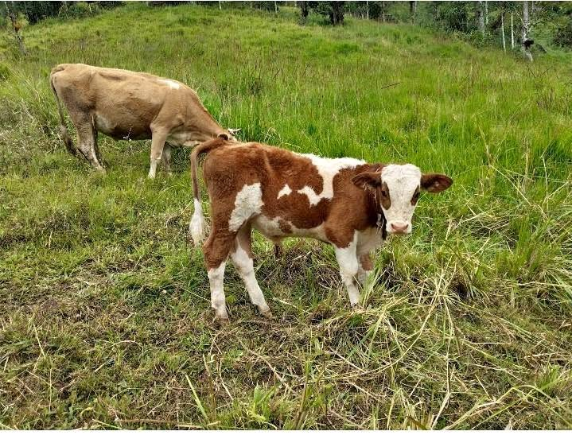

Precio desconocido 25 ha

*¡SE VENDE TERRENO DE 25 HECTÁREAS! 🌄* Ideal para siembra y ganadería. Todo en un solo lugar. ✅ *25 hectáreas totales* - 9 hectáreas de inverna (apto para pasto o para sembrar repollo, papa, choclo y productos de sierra ✅ Cuenta con madera fina: *romerillo, moena y chirimoyo,etc.* ✅ *Agua asegurada*: pozos en cada potrero agua todo el año + quebrada en temporada de lluvia. Terreno productivo, con acceso y papeles en regla. 📍 Región Amazonas -Provincia Bongará-Distrito de Yambrasbamba-CP El Progreso. 📲 Interesados al inbox o al WhatsApp *[hidden information]*(precio a tratar) ¡Oportunidad